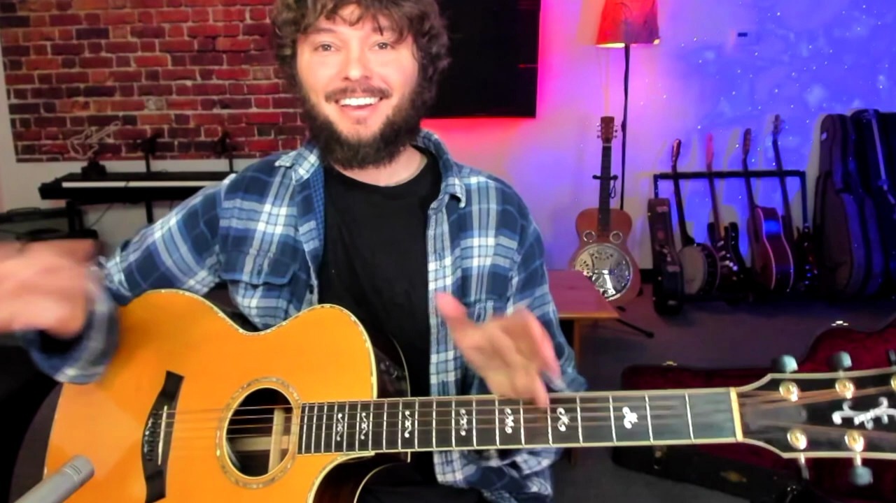
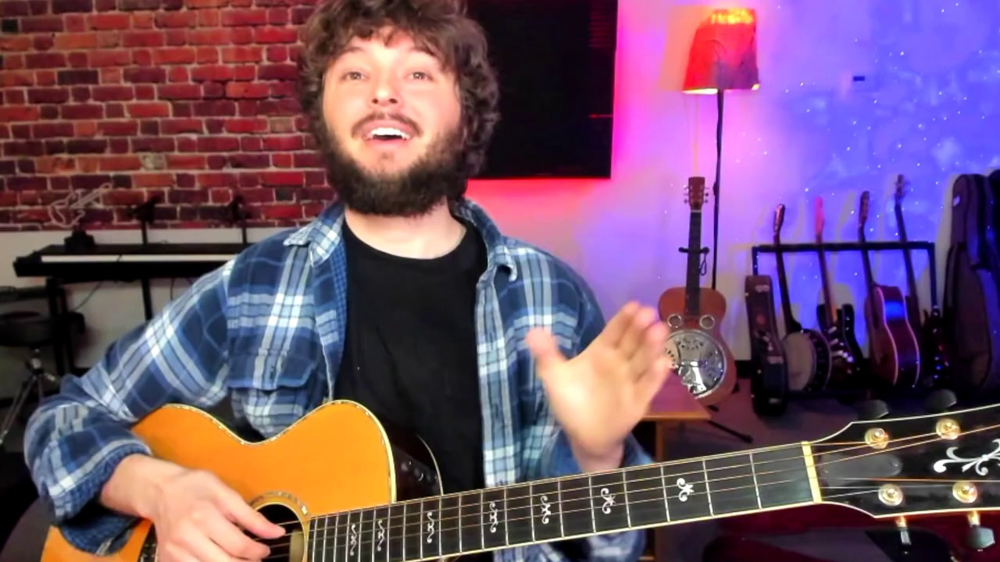
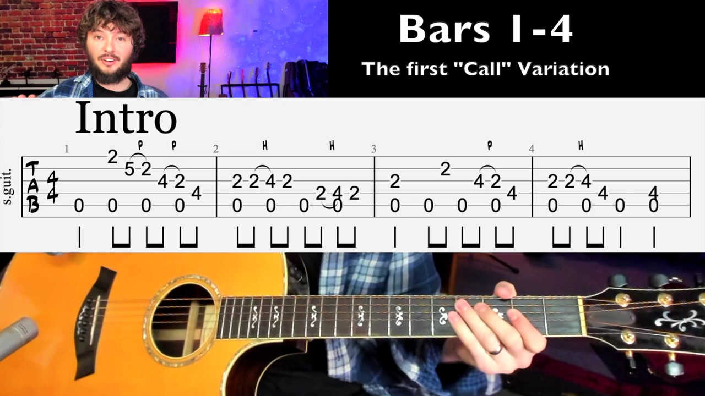
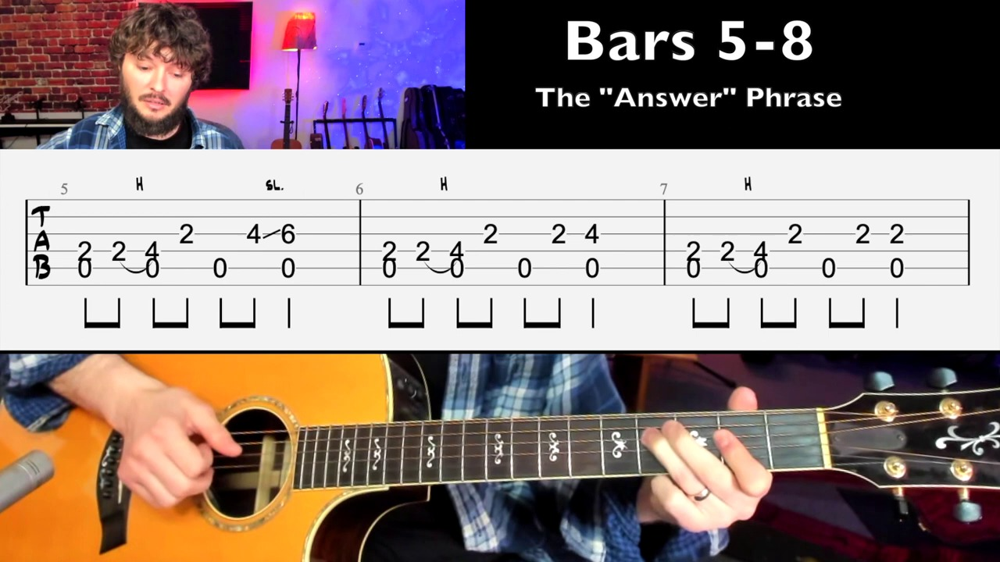
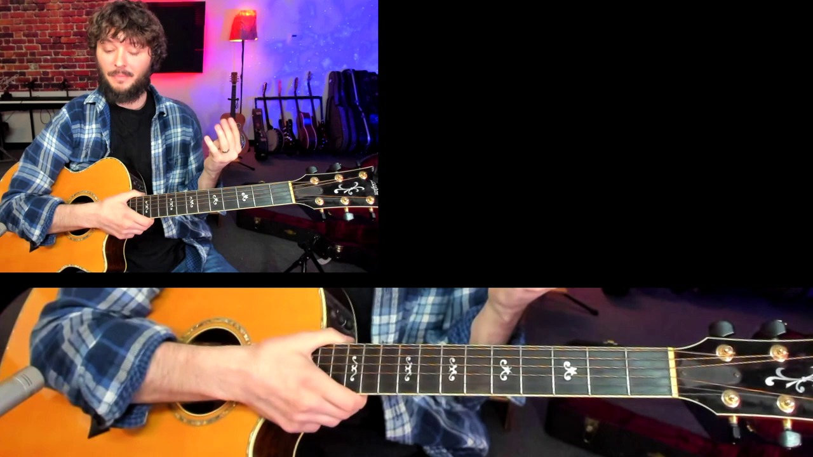
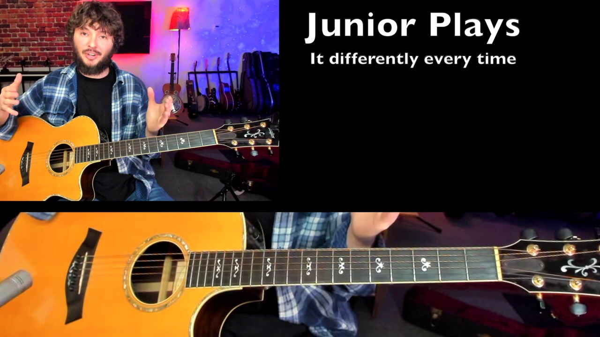
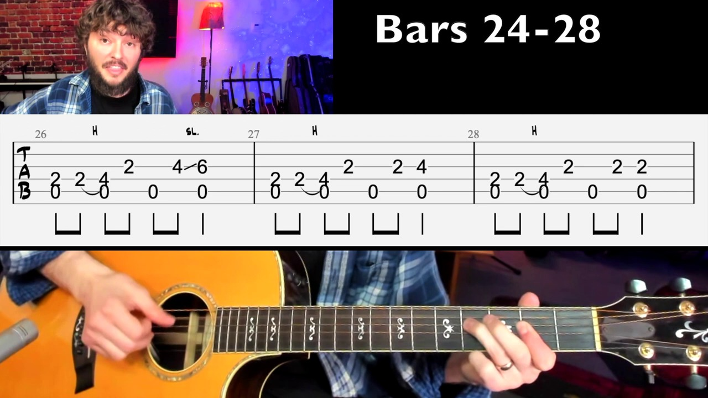
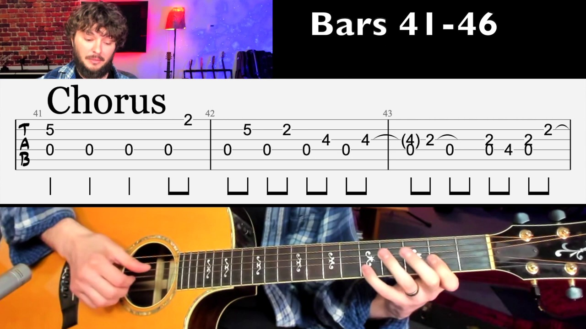
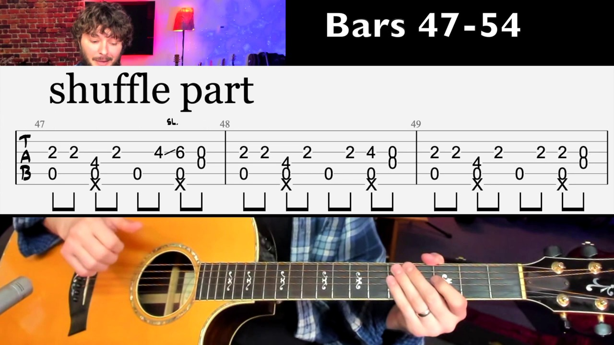

Key Moments










Summary & Script
Junior Kimbrough Guitar Lesson - Meet Me In The City Tutorial With Tabs
Source: https://www.youtube.com/watch?v=q7MwP9qbsOo
Video ID: q7MwP9qbsOo
Overview
This tutorial breaks down Junior Kimbrough’s blues‑rock classic “Meet Me In The City.” The instructor focuses on mastering the song’s 18‑bar intro—with its monotonic bass‑drone pattern and call‑and‑response melody—before quickly covering the verse, chorus, bridge (shuffle), and ending tag. Emphasis is placed on technique (barred chords, hammer‑ons, slides, thumb‑thumb combos, and percussive hand‑strokes) and on adapting the song’s rhythmic flexibility to a steady 4/4 practice tempo.
Topics Covered
- Intro (bars 1‑18) – Detailed step‑by‑step tab walkthrough of the call phrase (barred 2nd‑fret shape) and answer phrase, including hammer‑ons, slides, and finger‑roll alternatives.
- Structure of the song – Explanation of the overall form: intro → verse → verse‑outro → chorus → shuffle/bridge → short ending tag.
- Verse section – Shows how the vocal melody syncopates with the same bass pattern as the intro; discusses occasional metric variations (5‑beat, 6‑beat measures) that follow the lyric length.
- Chorus – Highlights the shift of the bass note from A to D, with a specific fingering (5th‑fret B‑string pinky) and a brief thumb‑doubling technique on measure 43.
- Shuffle/bridge – Describes the percussive element (hand‑slap on the guitar body, “X” marks in tabs) and how it sits on beats 2 and 4 while the melody repeats the answer phrase.
- Ending tag – Simple two‑measure outro that resolves the progression with a major‑blues feel on A.
- Practice advice – Encourages slow metronome work, focusing first on the intro, and reminds learners to be patient—mastery can take weeks or months.
Key Takeaways
- Master the intro’s monotonic bass pattern first; it forms the foundation for the rest of the song.
- Use a barred shape on the 2nd fret for the call phrase to keep the hand position steady.
- Hammer‑ons, slides, and finger‑rolls add subtle variation and keep the line fluid.
- The song’s rhythm is flexible—Kimbrough often adds or drops beats to match lyric length, but practice it in consistent 4/4 time.
- In the chorus, switch the root bass note to D and employ the pinky on the 5th‑fret B‑string.
- Incorporate percussive hand‑slaps on the guitar body for the shuffle section to capture the track’s groove.
- Be patient and practice slowly with a metronome; consistency will eventually make the fluid, hypnotic feel of the piece come naturally.
Notable Quotes
- “Focus most of your effort on that intro phrase; the other parts will be a lot easier if you can do that first.”
- “He plays it differently every single time—sometimes adding extra beats to match the lyric length.”
- “Be kind to yourself; it can take months to get comfortable with this type of playing, but it’s worth it.”
Podcast Script
JORDAN: Welcome to Episode 16 of SlackCasts by PodSlacker — where AI does the watching so you can do the listening. If you want a richer experience with today's episode, visit PodSlacker dot com slash SlackCasts — you'll find a written summary, key frame moments from the video, and an interactive AI chat to explore the topic as deep as you like. Now let's get into it.
MIKE: Today we're breaking down Junior Kimbrough’s “Meet Me In The City,” a blues‑rock study in hypnotic monotonic bass patterns and call‑and‑response phrasing.
JORDAN: The instructor’s focus is the 18‑bar intro, built on a barred 2nd‑fret shape that repeats the root on the low E and A strings while the higher strings carry a melodic answer.
MIKE: That intro is the linchpin—master it and the verse, chorus, and bridge become essentially variations on the same groove, which is a strategic way to compress practice time.
JORDAN: In bars 1‑2 the call phrase uses a full‑barre across the top four strings, then a quick hammer‑on on the B‑string 3rd fret, followed by a slide to the 4th fret in the second iteration.
MIKE: The hammer‑on adds subtle forward motion without disrupting the static bass drone, a classic Kimbrough trick to keep the rhythm breathing.
JORDAN: Bars 3‑4 introduce a finger‑roll alternative on the high E string to avoid excess hand movement; the instructor recommends two‑finger positioning to keep the shape compact.
MIKE: Compact handshape is crucial on stage because it lets you intersperse that percussive thumb‑doubling you hear later without breaking the groove.
JORDAN: Bars 5‑7 expand the call with a slide up to the 6th fret on the G string, then return to the original shape, creating the “answer” phrase that mirrors the call.
MIKE: That call‑and‑answer mirrors vocal phrasing, which is why the verse can overlay the same bass pattern while the vocals syncopate around it.
JORDAN: The instructor notes metric flexibility—Kimbrough often adds extra beats, swapping 4/4 for 5/4 or 6/4 to match lyric length, but for practice we lock everything into steady 4/4.
MIKE: Locking to 4/4 is a practical rehearsal technique; once the pattern’s internalized, you can re‑introduce those metric expansions for authentic feel.
JORDAN: Moving to the verse, the bass line stays identical, but the melody drops in between bass notes, creating a syncopated feel that’s essential for that swampy groove.
MIKE: That syncopation is what turns a static drone into a living, breathing line—good for live improvisation because you can stretch or compress phrases on the fly.
JORDAN: The chorus shifts the root from A to D; the pinky on the 5th‑fret B‑string provides the D bass note while the left hand maintains the barred shape.
MIKE: Changing the tonal center to D while retaining the same finger‑roll motif gives the chorus a lift without abandoning the song’s core identity.
JORDAN: Measure 43 introduces a thumb‑doubling technique—essentially hitting the low A with the thumb twice on the beat, then back to the regular pattern.
MIKE: That thumb‑doubling adds a percussive punch that mimics the rhythmic drive of a drum’s backbeat, a clever way to fill out a trio setting.
JORDAN: The shuffle/bridge brings in explicit percussive hand‑slaps on beats 2 and 4, marked with X’s in the tab, while the answer phrase repeats over an A‑based major‑blues feel.
MIKE: Those hand‑slaps are a hallmark of Kimbrough’s live sound; they turn the guitar into a rhythm section, which is why many blues bands strip down to just guitar and drums.
JORDAN: The ending tag is a two‑measure A‑major blues turnaround, essentially a simple cadence that resolves the tension built up over the shuffle.
MIKE: From a strategic standpoint, that tag gives you a clean exit point for live sets, allowing you to loop back into the intro or segue into a new song seamlessly.
JORDAN: Practice advice: start with a metronome at a comfortable 60 bpm, lock in the intro’s bass‑drone, then layer hammer‑ons, slides, and the percussive slaps gradually.
MIKE: And remember the instructor’s mantra—be kind to yourself. Internalizing that hypnotic groove can take weeks, but the payoff is a song that sticks in listeners’ heads and showcases your control over rhythmic nuance.
JORDAN: That’s a wrap on today's SlackCast. Head over to PodSlacker dot com slash SlackCasts for the written summary, visual key moments, and an AI chat to dive even deeper into today's topic. Until next time — slack off smarter.